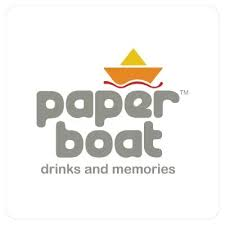
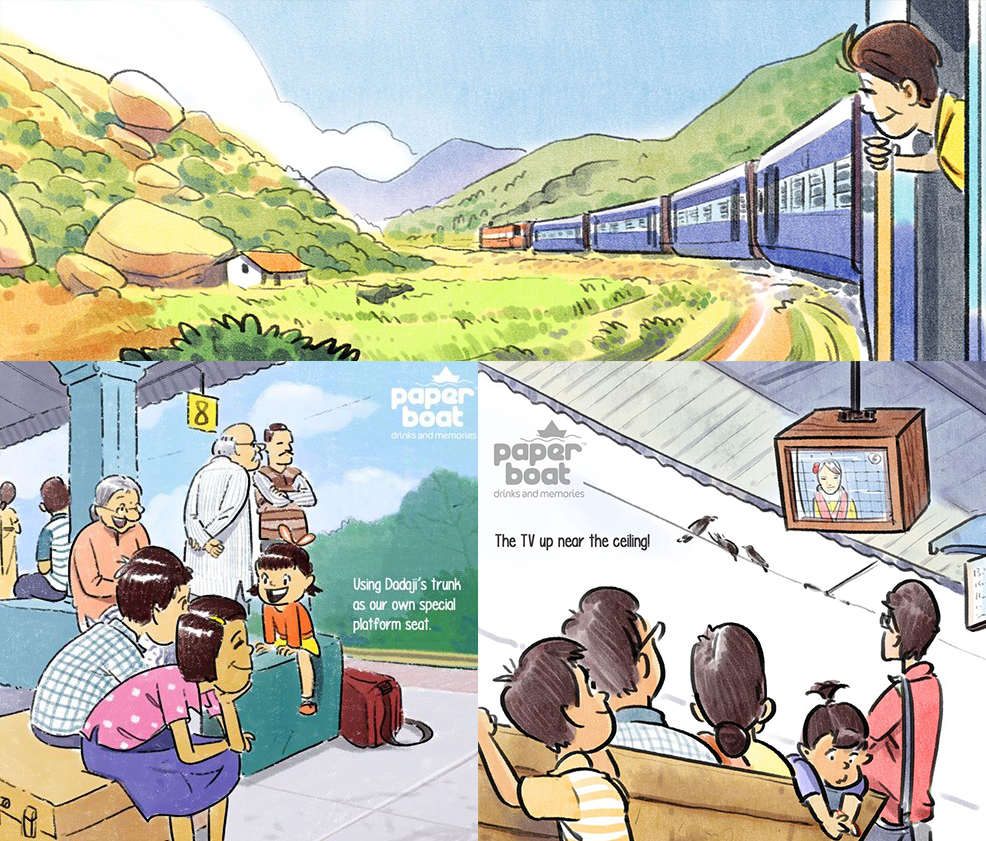
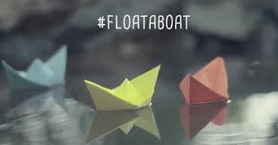

How nostalgia and childhood memories built India's most emotionally connected beverage brand.

Paper Boat didn't compete on taste—it competed on emotional recall. Drinks & Memories and #FloatABoat turned traditional beverages into childhood time machines for urban India.
Case study analyzes Drinks & Memories — nostalgia positioning masterpiece — and #FloatABoat — participation movement. Beverage category's emotional leadership blueprint.
Urban truth: people crave cultural roots in modern life.
Urban India disconnected from roots. Paper Boat insight: traditional drinks = childhood memories. Targeted nostalgia-craving millennials. No taste claims—just emotional triggers.
Cinematic films recreated rain play, kite flying, Holi—pure sensory recall. Poetic narration + familiar soundtrack = cinematic ads. Pouch design reinforced childhood simplicity.
"Digital-first → TV amplification created organic conversations. Product, packaging, story spoke one language. Emotional bond > functional purchase."
Natural funnel: Watch story → Feel nostalgia → Seek product → Cultural reconnection. Depth-first positioning beat speed-first competitors.

Monsoon timing + paper boat nostalgia = perfect. Float boat → fund education. Zero-friction participation: anyone could join. Nostalgia became social movement.
Parents with kids, friends together—community relived childhood. UGC exploded across social. Not CSR add-on—core brand extension. Emotional participation scaled organically.
"Participation > consumption. Simple act + social good = self-sustaining movement. Monsoon relevance maximized cultural penetration."
Funnel mastery: Awareness → Easy participation → Social sharing → Community momentum → Brand loyalty. Depth + scale through user-generated nostalgia.

Urban nostalgia craving created whitespace. Emotional gaps beat functional competition.
Rain, kites, Holi = multi-sensory triggers. Visual + audio nostalgia > single-medium ads.
Product, pouch, story unified. Packaging reinforces positioning = stronger recall.
#FloatABoat simplicity exploded scale. Easy acts become movements.
Monsoon paper boats = perfect relevance. Seasonal alignment multiplies resonance.
Education funding elevated simple act. Emotional participation > passive consumption.
Paper Boat mastered beverage emotionality: Drinks & Memories triggered nostalgia, #FloatABoat made it participatory. Drinks became cultural bridges.
Universal truth: nostalgia + zero-friction participation = category creation. Paper Boat proved urban India buys memories, not just refreshment.
Brands win when they reconnect people to their roots.
At Brand Business Talk, we help brands with research, strategy, market insights, and growth recommendations. Let's build your brand growth strategy together.